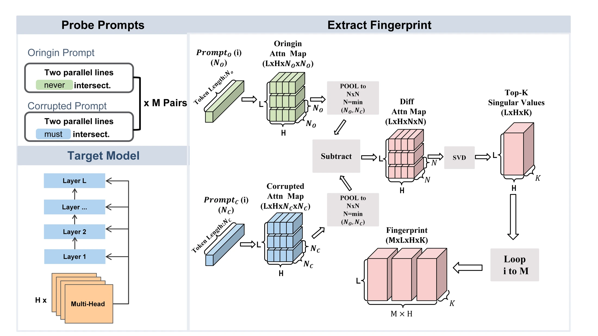
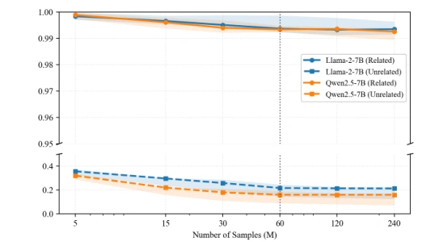
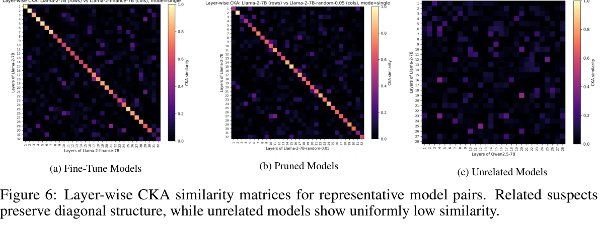

Survive adaptation?
Fine-tuning from 5M to 700B tokens, plus PPO and DPO preference optimization. Test whether extensive updates preserve the provenance signal.
Table 1 · Appendix F.1Attention-based Differential Fingerprinting
for Large Language Models
Models change.
Where they came from still matters.
AttnDiff traces model provenance through the attention response to minimally edited prompts. Its compact differential fingerprints require no model training or parameter modification. Explore how we test them across adaptation, merging, and compression.
Evaluate both sides of provenance: preserve similarity to transformed derivatives, and distinguish models from unrelated families.
Use the same paired probes for every model. A minimal lexical pivot changes semantic intent while preserving surface form; pooling aligns attention maps when token counts differ.
Example from Appendix B, Table 8. Both prompts are inputs to the model.
Fine-tuning from 5M to 700B tokens, plus PPO and DPO preference optimization. Test whether extensive updates preserve the provenance signal.
Table 1 · Appendix F.1Compare merged models with their source models. Cover weight-space and distribution-level merging, with eight additional merging recipes.
Table 2 · Appendix F.2Test structured and unstructured pruning, then extend to Random, L1, and Taylor pruning criteria using LLM-Pruner.
Table 3 · Appendix F.3Read across a row to see what changes, what is compared, and how the experiment is measured.
Scroll across to compare the full protocol →
| Experiment | Variable & coverage | Comparison / control | Readout & source |
|---|---|---|---|
| RQ 01Fine-tuningBrowse models ↗ | Six derivatives; 5M–700B fine-tuning tokens | Llama-2-7B as reference; same paired probes | Parent–derivative similarityTable 1 |
| RQ 02Model mergingBrowse models ↗ | Weight-space and distribution-level merging | Merged model compared with each source model | Similarity to each parentTable 2 |
| RQ 03Model pruningBrowse models ↗ | Six structured + three unstructured variants | Llama-2-7B as reference; shared probe protocol | Parent–derivative similarityTable 3 |
| SEPARATIONDiscriminability | 36 related + 33 unrelated suspects | Six baselines; each keeps its own similarity formulation | AUROC · AUPRTable 4 / §5.6 |
| ADAPTATIONPreference optimizationBrowse models ↗ | PPO reward/policy models and DPO derivatives | Llama-2-7B as reference | Parent–derivative similarityTable A1 / F.1 |
| MERGINGMerging recipesBrowse models ↗ | Eight additional model-merging strategies | Compare merged models to their sources | Similarity to source modelsTable A2 / F.2 |
| PRUNINGPruning criteriaBrowse models ↗ | Random · L1 norm · Taylor importance | LLM-Pruner; common model/probe setup | Similarity after pruningTable A3 / F.3 |
| TRANSFERCross-family & scaleBrowse models ↗ | Qwen2.5 · Gemma · Mistral; multiple model sizes | Within-family reference pairs; Qwen at 1.5B / 14B | Cross-configuration similarityTable A4 / F.4 |
| TRANSFERDistillationBrowse models ↗ | Open-R1 · DeepSeek-R1 · logit distillation | Reference and suspect pairs listed in Appendix H | Reference–suspect similarityTable A5 / F.5 |
| ARCHITECTUREMixture of expertsBrowse models ↗ | Three Mixtral-8×7B derivatives | Mixtral-8×7B as reference | Reference–suspect similarityTable A6 / F.6 |
| COMPRESSIONQuantizationBrowse models ↗ | Six GPTQ variants; 4-bit and 8-bit | Llama · Qwen · Mistral reference models | Similarity after quantizationTable A7 / F.7 |
| MECHANISMDifferential attention | Original vs. differential attention | Same preprocessing; 11 related + 8 unrelated models | Both group meansTable 11 |
| BUDGETNumber of probes | M = 5 / 15 / 30 / 60 / 120 / 240 | Same fingerprint extraction and comparison | Similarity vs. probe countFigure 5 |
| SPECTRUMSpectral rank | K = 1 / 2 / 3 / 5 / 10 | Same probes; vary retained singular values | Related / unrelated meansTable 10 |
| PROMPTSProbe length | 10 / 30 / 60 words | Vary probe length within the probing protocol | Related / unrelated similarityTable 9 |
| DOMAINSDomain composition | Code · Math · Economics · Medicine · Daily QA · Safety | Compare domain-specific probe sets | Domain-wise similarityTable 12 |
| METRICSimilarity metric | CCA / SVCCA / centered linear CKA | Identical fingerprints; 11 related + 8 unrelated suspects | Both group meansTables 13–14 |
Coverage extends to distillation, GPTQ quantization, Mixtral MoE, and cross-family/scale comparisons. Base families include Llama-2/3, Qwen2.5, Gemma, and Mistral. ¹ The 36 + 33 pool is the discriminability benchmark in Section 5.6; individual robustness and ablation experiments use their own model subsets.
Explore the models named in the paper’s experimental taxonomy, with reference models, study categories, and available checkpoint links.
Supervised fine-tuning
Reference / sourceLlama-2-7B
Supervised fine-tuning
Reference / sourceLlama-2-7B
Supervised fine-tuning
Reference / sourceLlama-2-7B
Supervised fine-tuning
Reference / sourceLlama-2-7B
Supervised fine-tuning
Reference / sourceLlama-2-7B
Supervised fine-tuning
Reference / sourceLlama-2-7B
PPO reward model
Reference / sourceLlama-2-7B
PPO policy / LoRA
Reference / sourceLlama-2-7B
DPO
Reference / sourceLlama-2-7B
DPO
Reference / sourceLlama-2-7B
Weight-space merging
Reference / sourceShisa-gamma-7b-v1 / WizardMath-7b-1.1 / Abel-7b-002
Distribution-level merging
Reference / sourceLlama-2-7B / OpenLLaMA-2-7b / mpt-7b
Structured pruning
Reference / sourceLlama-2-7B
Structured pruning
Reference / sourceLlama-2-7B
Structured pruning
Reference / sourceLlama-2-7B
Structured pruning
Reference / sourceLlama-2-7B
Structured pruning
Reference / sourceLlama-2-7B
Structured pruning
Reference / sourceLlama-2-7B
Unstructured pruning
Reference / sourceLlama-2-7B
Unstructured pruning
Reference / sourceLlama-2-7B
Unstructured pruning
Reference / sourceLlama-2-7B
Cross-family / scale study
Reference / sourceQwen2.5-1.5B
Cross-family / scale study
Reference / sourceQwen2.5-1.5B
Cross-family / scale study
Reference / sourceQwen2.5-1.5B
Cross-family / scale study
Reference / sourceQwen2.5-14B
Cross-family / scale study
Reference / sourceQwen2.5-14B
Cross-family / scale study
Reference / sourceQwen2.5-14B
Cross-family / scale study
Reference / sourcegemma-2-2b
Cross-family / scale study
Reference / sourcegemma-2-2b
Cross-family / scale study
Reference / sourcegemma-2-2b
Cross-family / scale study
Reference / sourceMistral-7B-v0.3
Cross-family / scale study
Reference / sourceMistral-7B-v0.3
Cross-family / scale study
Reference / sourceMistral-7B-v0.3
Reasoning distillation
Reference / sourceLlama-3.1-8B
Reasoning distillation
Reference / sourceQwen2.5-7B
Reasoning distillation
Reference / sourceQwen2.5-14B
Logit-based distillation
Reference / sourceLlama-2-7B
Mixture of experts
Reference / sourceMixtral-8x7B
Mixture of experts
Reference / sourceMixtral-8x7B
Mixture of experts
Reference / sourceMixtral-8x7B
GPTQ quantization
Reference / sourceQwen2.5-7B
GPTQ quantization
Reference / sourceQwen2.5-7B
GPTQ quantization
Reference / sourceLlama-2-7B
GPTQ quantization
Reference / sourceLlama-3.1-8B
GPTQ quantization
Reference / sourceLlama-3.1-8B
GPTQ quantization
Reference / sourceMistral-7B-v0.3
Unrelated comparison model
Compared againstLlama-2-7B
Unrelated comparison model
Compared againstLlama-2-7B
Unrelated comparison model
Compared againstLlama-2-7B
Unrelated comparison model
Compared againstLlama-2-7B
Unrelated comparison model
Compared againstLlama-2-7B
Unrelated comparison model
Compared againstLlama-2-7B
Unrelated comparison model
Compared againstLlama-2-7B
Unrelated comparison model
Compared againstLlama-2-7B
Unrelated comparison model
Compared againstLlama-2-7B
Unrelated comparison model
Compared againstLlama-2-7B
Try another model name or reset the experiment filter.
This directory summarizes the named models across studies. Reference models are shown on each card. It is separate from the 36 + 33 discriminability pool; individual experiments and ablations use their own subsets.
Subtract paired attention maps, summarize each layer and head with its top singular values, and compare the resulting probe geometry.

Pool each paired attention map to the smaller token length. Subtract to isolate the response to the semantic pivot.
Retain K = 3 singular values per head and layer. Aggregate all heads and layers into a fingerprint for each probe.
Centered linear CKA compares models with different feature dimensions, without requiring explicit layer or head matching.
Explore individual model comparisons, then inspect the full baseline benchmark. Values are reported in the paper; similarity and discriminability answer different questions.
Six downstream models span 5 million to 700 billion fine-tuning tokens. Does a fingerprint survive substantial domain adaptation?
AttnDiff retains similarity above 0.985 across all six derivatives. REEF is also strong, with a slightly higher mean (0.9966 vs. 0.9945).
Table 1 · Llama-2-7B derivatives
Similarity scores, on a 0–1 scale. REEF is shown as a strong representation-based comparator.
| Suspect / comparison | AttnDiff | REEF |
|---|---|---|
| Llama-2-Finance · 5M tokens | 0.9989 | 0.9950 |
| Vicuna-1.5 · 370M tokens | 0.9986 | 0.9985 |
| WizardMath · 1.8B tokens | 0.9985 | 0.9979 |
| Chinese-LLaMA-2 · 13B tokens | 0.9963 | 0.9974 |
| CodeLLaMA · 500B tokens | 0.9890 | 0.9947 |
| Llemma · 700B tokens | 0.9856 | 0.9962 |
The discriminability benchmark treats 36 related suspects as positives and 33 unrelated suspects as negatives. AUROC and AUPR measure separation across decision thresholds.
Compare six baselines covering parameter fingerprints (PCS, ICS), representations (Logits, REEF), adversarial triggers (ProFlingo), and semantic fingerprints (LLMMap).
AttnDiff reports the highest AUROC and AUPR in Table 4, with a small margin over REEF. These are ranking metrics, not accuracy percentages. Methods retain their original similarity formulations and access requirements.
| Method | AUROC ↑ | AUPR ↑ |
|---|---|---|
| PCS | 0.9566 | 0.9367 |
| ICS | 0.9789 | 0.9795 |
| Logits | 0.9757 | 0.9746 |
| REEF | 0.9867 | 0.9877 |
| ProFlingo | 0.8374 | 0.8927 |
| LLMMap | 0.8925 | 0.9014 |
| AttnDiff | 0.9883 | 0.9881 |
Source: Table 4 / Section 5.6. Related = positive.
Isolate the differential mechanism, probe budget, spectral rank, and similarity metric. Report both related and unrelated models to expose the trade-offs.
Replace differential attention with original attention while keeping the other preprocessing steps identical.
| Model / group | Original | Differential |
|---|---|---|
| CodeLLaMA-7B | 0.5134 | 0.9890 |
| Llemma-7B | 0.2902 | 0.9856 |
| Related mean ↑ | 0.8817 | 0.9937 |
| Unrelated mean ↓ | 0.3731 | 0.1647 |
Table 11 · 11 related + 8 unrelated models. Group means use this ablation subset.
Very small probe sets (M ≤ 15) produce spurious similarity for unrelated models. The paper chooses M = 60 for separation and efficiency.

Figure 5 · Original figure with a broken vertical axis; inspect its scale when comparing curves.
Sweep spectral rank K. Higher ranks lower unrelated similarity but also weaken similarity to related models.
| Rank K | Related ↑ | Unrelated ↓ |
|---|---|---|
| 1 | 0.9928 | 0.2708 |
| 2 | 0.9941 | 0.2413 |
| 3 · default | 0.9937 | 0.1647 |
| 5 | 0.9854 | 0.1544 |
| 10 | 0.9711 | 0.1476 |
Table 10 · Average CKA similarity.
Keep the fingerprint matrix fixed and change only the similarity metric. Centered linear CKA reduces spurious similarity in this comparison.
| Metric | Related ↑ | Unrelated ↓ |
|---|---|---|
| CCA | 0.9924 | 0.3112 |
| SVCCA | 0.9941 | 0.2419 |
| CKA · default | 0.9937 | 0.1647 |
Table 14 · 11 related + 8 unrelated suspects (Table 13).
Additional controls: probe length (10 / 30 / 60 words, Table 9) and domain composition (Table 12).

With M = 60 pairs, extraction requires 120 forward passes per model. The paper reports approximately 5 minutes for a 7B model on a single NVIDIA RTX 5090. This is a reported setup-specific timing, not a universal runtime guarantee. Reference fingerprints can be cached.
AttnDiff requires access to internal attention activations. The evaluated transformations support empirical provenance analysis; similarity alone does not establish legal ownership or guarantee robustness to every adaptive attack. See the paper’s limitations for the scope of the claims.
Install the package, then compare the included pre-computed fingerprints. To extract your own, configure model paths and device settings in the batch script.
Full installation & usage guide ↗git clone https://github.com/zhb0119/AttnDiff.git
cd AttnDiff
uv sync
uv run attndiff-compare \
--base output/comput_W/fingerprint_Llama-2-7B.json \
--dir output/comput_W \
--cka linear@misc{zhang2026attndiffattentionbaseddifferentialfingerprinting,
title={AttnDiff: Attention-based Differential Fingerprinting for Large Language Models},
author={Haobo Zhang and Zhenhua Xu and Junxian Li and Shangfeng Sheng and Dezhang Kong and Meng Han},
year={2026},
eprint={2604.05502},
archivePrefix={arXiv},
primaryClass={cs.CR},
url={https://arxiv.org/abs/2604.05502}
}